AKM
概述
本章以双边固定效应分解描述客户、事务所和审计师之间的异质性，并检查个人分数的识别支持与可迁移性。总体方差份额与个人排名精度是不同问题；稀有失败、有限流动和短职业记录是当前的重要限制。
核心结果
不同观察门槛下，客户差异占据较大的方差份额，审计师份额通常高于事务所；这不等于个人排名已可靠测准。 未预警综合失败的分解比较不设门槛、3 份／3 年和 5 份／5 年三种样本。观测为公司—年；模型分别吸收客户与事务所、客户与 A1、事务所与 A1，再加年度 FE，按客户聚类。控制规模、杠杆、亏损、ROA、Z-score、杠杆变化、报告时滞、经营现金流、年龄、成长性、市净率、应计项目及缺失指标。N 为每个模型的实际估计样本，精确起止年份待核验；未显式截取最大连通分量，方差为未作 leave-out 校正的插件估计。
回归设定（三个双边模型分别估计）。
\[ \begin{aligned} Y_{it}&=\alpha_i+\psi_{f(i,t)}+\lambda_t+X_{it}'\gamma+\varepsilon_{it},\\ Y_{it}&=\alpha_i+\theta_{a(i,t)}+\lambda_t+X_{it}'\gamma+\varepsilon_{it},\\ Y_{it}&=\psi_{f(i,t)}+\theta_{a(i,t)}+\lambda_t+X_{it}'\gamma+\varepsilon_{it}. \end{aligned} \]
\(Y_{it}\) 为未预警综合失败，\(\alpha_i\)、\(\psi_f\)、\(\theta_a\)、\(\lambda_t\) 分别为客户、事务所、A1 和年份效应；\(X_{it}\) 为上段列明的控制变量与缺失指标。各模型、门槛使用各自有效样本并按客户聚类。图中呈现这些拟合成分的插件方差分解，协方差单列；不是三个模型共用一个因果参数，也不是个人能力的无误差排序。
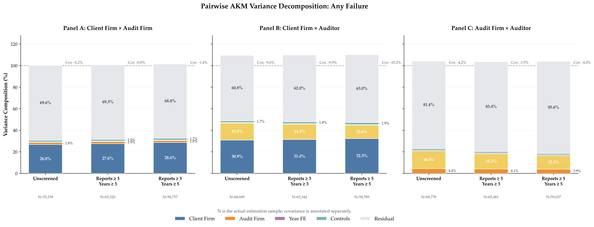
全部结果变量和门槛 · 实施、方程与网络 · 排名可靠性与前瞻诊断
回归设定。 双边敏感度分析比较三种配对、三档门槛和四个结果变量，共 36 个规格；完整 CSV 中 n_raw 与 n_est 分开记录。控制变量 size lev loss roa zscore chg_lev report_lag cfo age growth mtb accruals 分别对应规模、杠杆、亏损、ROA、Z-score、杠杆变化、报告时滞、经营现金流、年龄、成长性、市净率和应计项目，按候选网络中位数填缺并加缺失指标；原始单位、上游时点及缩尾边界待核验。配对实体加年度 FE，客户聚类。样本不预先限定最大连通分量，不另施加一个跨分量统一归一化；绝对 FE 的跨分量质量比较不成立。各实际估计样本的最小／最大年份未在敏感度 CSV 中直接报告，待核验。补充诊断与双边门槛图来自不同脚本，不能把它们的 N、训练窗口和分数直接视为相同口径。
1. 核心结论
新版双边 AKM 的结果表明，审计质量结果的横截面差异首先与客户公司有关，其次才是审计师或事务所。在报告数不少于 3 份、服务年数不少于 3 年的样本中，客户×事务所模型里，客户固定效应解释未预警综合失败总方差的 27.6%，事务所固定效应解释 1.9%；客户×审计师模型里，客户和审计师固定效应分别解释 31.4% 和 14.3%；事务所×审计师模型里，事务所和审计师固定效应分别解释 4.1% 和 14.2%。
回归／统计设定。 结论基于三类双边模型的未校正插件方差份额；不是因果解释力，也不等于个人排名精确。 变量与回归设定。
这些数字是固定效应、年度和控制变量对结果变量总方差的描述性分解，不是客户、事务所或审计师对审计失败的因果贡献。更严格的 5 份报告／5 年门槛不会改变这一排序：客户×审计师模型中，客户份额从 31.4% 升至 32.3%，审计师份额从 14.3% 降至 12.6%；事务所×审计师模型中，事务所份额从 4.1% 降至 3.9%，审计师份额从 14.2% 降至 12.5%。
2. AKM 如何在本项目中实施
回归／统计设定。 公司—年、有效客户／事务所／A1 ID，三类配对实体加年度 FE，客户聚类；控制变量与中位数补缺逐项列示。没有显式最大连通分量筛选。 变量与回归设定。
2.1 观测单位、ID 与样本进入规则
每条观测是一个公司—年度。脚本以 stock_code 构造客户 ID，并按 stock_code×year 合并签字审计师团队数据；事务所使用 dom_firm_id，签字审计师优先使用标准化的 a1_auditor_id，缺失时才以 auditor1 姓名构造临时 ID。只有客户、事务所、A1 审计师和年度四项均有效的公司—年度才进入 AKM 候选网络。
审计师的报告数与服务年数在这个“三方 ID 均有效”的候选网络中计算：报告数是该审计师的公司—年度记录数，服务年数是其出现过的不同日历年数。脚本据此构造三种样本：不设门槛、报告数不少于 3 且服务年数不少于 3、报告数不少于 5 且服务年数不少于 5。门槛在估计各结果变量之前施加；随后，每个结果变量再剔除该结果缺失的观测。
所有规格使用同一组控制变量：规模、杠杆、亏损、ROA、Z-score、杠杆变化、滞后报告变量、经营现金流、公司年龄、成长性、市净率和应计项目。每个控制变量的缺失值以候选网络内的中位数填补，并同时加入相应的缺失指示变量。
2.2 三种双边固定效应模型
本页估计三种两两固定效应设定：
\[ \begin{aligned} Y_{ift} &= X_{it}'\gamma+\alpha_i+\psi_f+\lambda_t+\varepsilon_{ift},\\ Y_{iat} &= X_{it}'\gamma+\alpha_i+\phi_a+\lambda_t+\varepsilon_{iat},\\ Y_{fat} &= X_{it}'\gamma+\psi_f+\phi_a+\lambda_t+\varepsilon_{fat}. \end{aligned} \]
其中，\(i\) 为上市公司客户，\(f\) 为审计事务所，\(a\) 为 A1 签字审计师，\(t\) 为年度；\(\alpha_i\)、\(\psi_f\) 和 \(\phi_a\) 分别表示客户、事务所和审计师固定效应，\(X_{it}\) 是上述控制变量，\(\lambda_t\) 为年度固定效应。结果变量包括未预警综合失败、财务重述、财务违规和 Jones 异常应计绝对值。
每一组双边关系都用 reghdfe 同时吸收两类实体固定效应和年度固定效应，并按客户聚类标准误；高维固定效应回归会删除单例及无法在当前规格中识别的共线观测。因此，CSV 中的 n_raw 是门槛和结果变量缺失处理后的观测数，n_est 才是实际进入回归的样本数。
2.3 识别网络、mover 与 stayer
AKM 的识别来自“实体—实体”二部网络中的重复匹配，而不是某一条横截面记录。以事务所×审计师模型为例：一个审计师在不同时期服务于不同事务所时是 mover，这条流动把两个事务所节点连在一起，使它们的事务所固定效应可以相对比较；始终留在同一事务所的审计师是 stayer。stayer 不自行连接事务所节点，但如果其所在事务所已通过 mover 接入同一连通分量，stayer 的审计师效应仍可在该网络内估计。
同样地，客户×事务所模型依靠客户更换事务所来连接事务所节点；客户×审计师模型依靠客户更换签字审计师来连接审计师节点。图中的 1,307 名事务所 mover 是原 A1 网络的“骨干”，2,064 名 stayer 通过这些骨干所在的连通分量被接入。未筛选潜在连通样本用斜线表示；3 份／3 年和 5 份／5 年样本分别用两种实心绿色表示。
双边估计没有显式抽取最大连通分量。它对每一个“门槛×双边关系×结果变量”组合直接估计高维固定效应，由回归程序删除单例和共线观测。因此，图中的潜在连通样本、mover 和 stayer 是识别结构的诊断信息，不等于每一行 CSV 的实际 e(sample)；不同模型和结果变量的 n_est 可能不同。固定效应在每个连通分量内只识别到一个加法常数，故应比较分解份额和相对差异，而不将固定效应的绝对水平解释为跨分量可比的“质量排名”。
2.4 方差分解与参考文献
对每一个实际估计样本，脚本从吸收的两类实体固定效应、年度固定效应、控制变量线性预测部分和残差中计算样本方差，再以结果变量总方差为分母报告份额。协方差项按“总方差减去所有单项方差”计算，因此包含所有组成部分之间的交叉协方差，不只是固定效应之间的协方差。负协方差会使正项份额之和超过 100%。这些是原始插件分解，未作 leave-out 偏误校正，也不是因果效应。
这里沿用匹配雇员—雇主数据中的 AKM 加性固定效应思路，并将“雇员—雇主”替换为本项目的客户、事务所和签字审计师配对。基础文献为 Abowd、Kramarz 与 Margolis（1999），其用匹配面板分解个人、企业和残差异质性；关于利用流动者连接实体固定效应、并将网络结构与分解解释相结合的后续应用，可参见 Card、Heining 与 Kline（2013）。后三维 AKM 图只将原有的 3 份／3 年三维结果作为参照；它与双边模型的实际估计样本不完全相同，不能被读取为嵌套规格检验。
2.5 稀有事件与线性 AKM
本项目把综合失败、财务重述和财务违规这些二元稀有结果放在线性加性固定效应模型中估计。结果稀有本身不会像稀有事件 logit 或其他非线性固定效应模型那样，机械地产生系数偏误；在条件均值设定正确、解释变量严格外生且网络可识别的前提下，零值仍是有效观测，线性 AKM 估计的是失败概率的条件均值差异。因此，稀有事件不会直接使现有最小二乘代码产生所谓的“稀有事件偏误”。
稀有性真正削弱的是信息量和二阶矩的解释。许多审计师即使拥有多份审计报告，也可能只出现零次或一次失败，使个体固定效应含有较多抽样波动，低暴露审计师的估计尤其不稳定。不过，本页的门槛比较表明，这一问题没有主导总体结论：从不设门槛到 3 份／3 年、再到 5 份／5 年，主要方差份额的量级接近，客户、审计师与事务所的相对排序也基本不变。因此，当前排序并非完全由低暴露审计师驱动。门槛稳定性仍不能证明每个审计师固定效应都估计得很精确，也不能消除固定效应方差和协方差原始插件分解中的有限样本偏误；未经 leave-out 校正的方差份额仍按上一节所述谨慎解释。
3. 样本门槛
A1 审计师的样本覆盖包括：全体 A1 审计师、未筛选的潜在连通样本、3 份／3 年 AKM 样本、跨事务所流动者、经网络连通的未流动者，以及 3 份／3 年以下的排除样本。5 份／5 年 AKM 样本共 2,333 名审计师（全体 A1 的 37.9%）；它用深绿色实心条表示。未筛选潜在连通样本仍用绿色斜线，3 份／3 年 AKM 样本用浅绿色实心条。5 份／5 年人数来自已完成的双边 AKM 输出；其余六项沿用原 A1 审计师网络统计。
回归／统计设定。 门槛由候选网络中的报告数和不同服务年份计算，随后按结果缺失和单例进入估计；原始样本与实际 n_est 分开。 变量与回归设定。
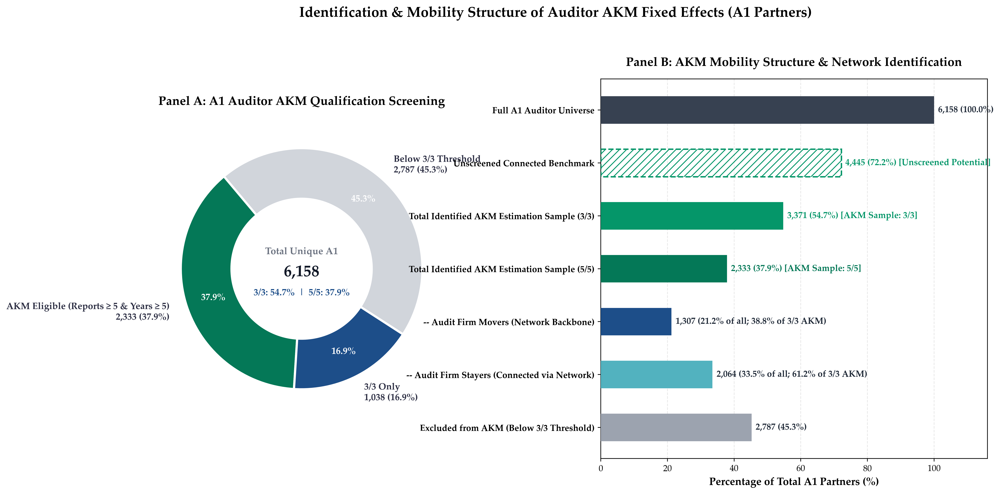
4. 双边 AKM 的方差分解
回归／统计设定。 三种配对×三种门槛×四个结果完整保留。控制、FE 与聚类沿用第 2 节；方差与协方差份额同一分母，未作 leave-out 修正。 变量与回归设定。
4.1 3 份／3 年基准结果
下表给出三个两两模型在 3 份／3 年样本中的核心份额。每一行均以各自模型、各自结果变量的总方差为分母；负协方差单列，正项份额因此不必相加为 100%。
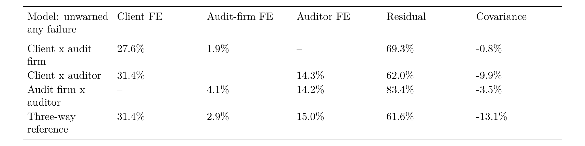
两组客户模型给出的排序一致：客户固定效应明显大于事务所固定效应，也大于审计师固定效应。事务所×审计师模型进一步表明，在不控制客户固定效应时，审计师份额仍高于事务所份额。残差仍占 62.0% 至 83.4%，所以固定效应分解不是对结果的完整解释。
4.2 any failure
客户×事务所模型中，客户份额在三种门槛下为 26.8%、27.6% 和 28.6%，事务所份额为 1.8%、1.9% 和 1.8%。客户×审计师模型中，客户份额为 30.9%、31.4% 和 32.3%，审计师份额为 15.8%、14.3% 和 12.6%。事务所×审计师模型中，事务所和审计师份额分别为 4.4%／16.4%、4.1%／14.2% 和 3.9%／12.5%。
4.3 财务重述
财务重述的模式与综合失败相近。3 份／3 年下，客户×事务所模型的客户份额为 28.0%、事务所份额为 1.4%；客户×审计师模型的客户份额为 30.3%、审计师份额为 13.6%；事务所×审计师模型的事务所和审计师份额为 2.8% 和 14.0%。
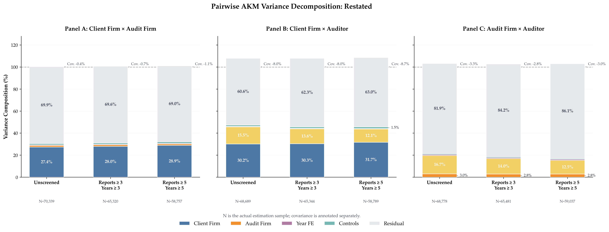
4.4 财务违规
3 份／3 年下，客户×事务所模型的客户份额为 26.5%，事务所份额为 1.8%；客户×审计师模型的客户和审计师份额为 30.6% 和 14.7%；事务所×审计师模型的事务所和审计师份额为 4.2% 和 14.1%。三种门槛下的相对排序一致。
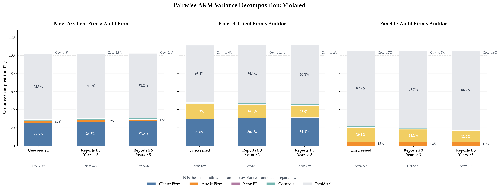
4.5 Jones 异常应计绝对值
应计质量的分解较不同。3 份／3 年下，客户×事务所模型的客户份额为 13.0%，事务所份额只有 0.4%；客户×审计师模型的客户和审计师份额为 20.7% 和 13.2%；事务所×审计师模型的事务所和审计师份额为 1.1% 和 7.4%。相对失败类结果，Jones 指标的残差更高，约为 77.9% 至 88.2%。
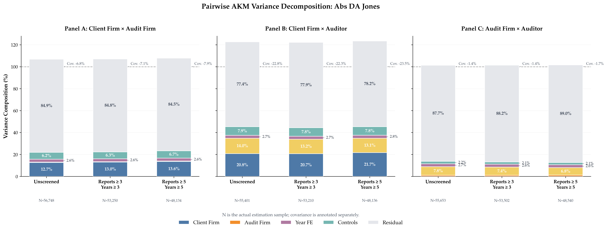
5. 双边模型与三维参照
下列三张图将每一种双边模型的 3 份／3 年结果与客户×事务所×审计师三维 AKM 的 3 份／3 年结果并列。对照的用途是检验量级和排序是否大致一致，而不是将左右两栏的差异归因于“加入第三个固定效应”。每个模型都按自己的可识别连通样本估计。
回归／统计设定。 双边与三维输出样本不完全相同，不能作为严格嵌套比较；三维历史结果的额外归一化和逐列样本待核验。 变量与回归设定。
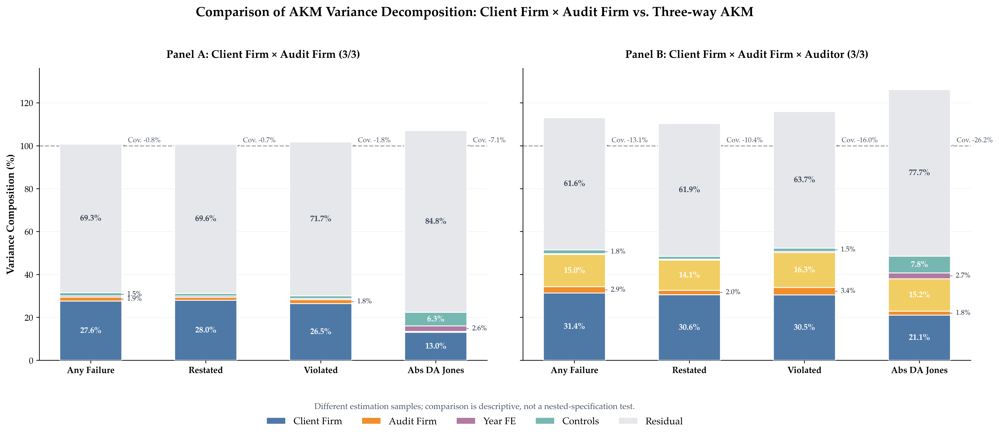
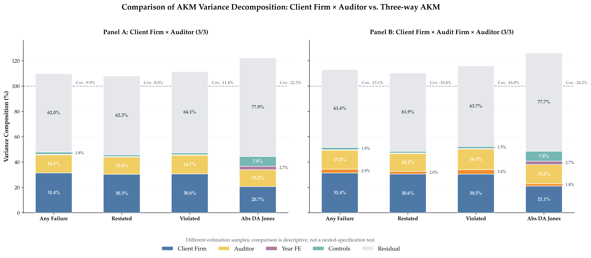
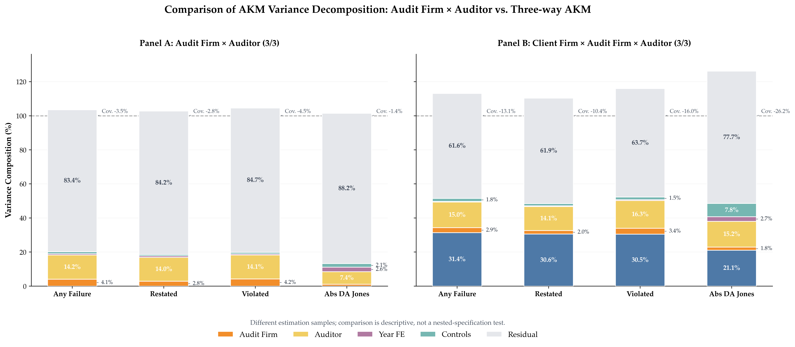
三维参照中的客户、事务所和审计师份额分别为：综合失败 31.4%、2.9% 和 15.0%；重述 30.6%、2.0% 和 14.1%；违规 30.5%、3.4% 和 16.3%；Jones 指标 21.1%、1.8% 和 15.2%。它与客户×审计师模型的量级最接近；这与两者都直接吸收客户和审计师异质性一致，但不证明二者在同一潜在样本上估计出相同对象。
6. 解释边界
本页回答的是：在可识别的审计配对中，不同层级的固定效应与结果变量横截面差异如何共同出现。它不回答客户改聘、事务所进入或审计师变动的因果效应。固定效应同时包含稳定异质性、剩余测量误差和样本网络结构；不同门槛还会改变进入估计的审计师和公司—年度样本。
回归／统计设定。 区分聚合分解、流动支持与个人排序可靠性；未完成检查保持为待核验。 变量与回归设定。
因此，当前结果支持一个描述性结论：在四类审计质量结果中，客户层面的异质性份额最大，审计师份额通常高于事务所份额；该排序在 3 份／3 年与 5 份／5 年门槛之间保持稳定。要将这一排序推进为因果解释，需要另行使用审计师／事务所流动、强制轮换或其他外生变动设计，并在共同的识别样本上比较结果。
7. A1 审计师质量指标的补充诊断
以下分析考察 A1 质量指标是否可识别、是否稳定，以及它与可观察背景的关系。该组结果来自 partner_humancapital 的 A1 模型，样本和门槛与前文双边 AKM 不完全相同，不能把表间差异解释为单纯增加或删除某项固定效应。质量指标用于轮换与 IV 时的结果见 审计师与审计质量。
回归／统计设定。 补充解释力、分样本预测、背景投影与前瞻诊断来自不同输出。训练窗口和是否排除未来信息逐项解释；没有事件影响度结果时，不声称少数失败驱动排名已被确证。 变量与回归设定。
7.1 审计师固定效应的解释力与可识别性
AKM 的基础估计分别使用四个审计结果，写成
\[Y_{it}=X_{it}'\gamma+\alpha_{a(i,t)}+\phi_{p(i,t)}+\mu_i+\lambda_t+\varepsilon_{it},\]
其中 \(a(i,t)\) 是 A1，\(p(i,t)\) 是审计事务所；\(\mu_i\) 为客户公司固定效应，在“不含客户 FE”版本中删除。\(X_{it}\) 是数据表中已经前置到公司年度的控制变量，标准误按客户公司聚类。嵌套模型比较在同一估计样本内删除 \(\alpha_a\) 后的 \(R^2\)；这衡量审计师 FE 的共同解释力，并不等于某一审计师 FE 的估计精度。
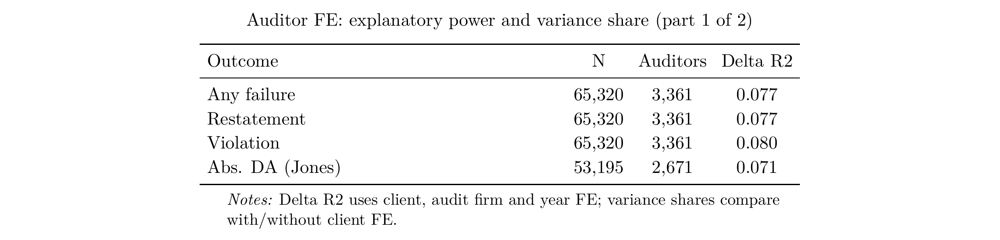
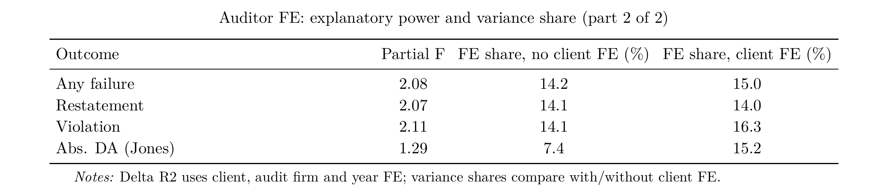
清洗后的综合失败、重述和违规样本均有 65,320 个观测值、3,361 名进入嵌套比较的审计师；加入审计师 FE 后 \(R^2\) 分别增加 0.0766、0.0765 和 0.0801。部分 F 约 2.07–2.11，在很多组自由度下整体显著。描述性方差分解中，审计师 FE 的方差占总结果方差约 14%–16%；该比例还取决于是否吸收客户公司 FE、分量间协方差及 FE 的抽样误差，不能读成审计师的因果贡献。异常应计的部分 F 只有 1.29。
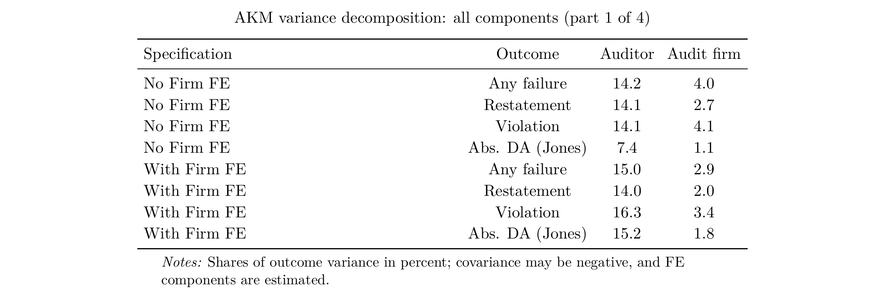
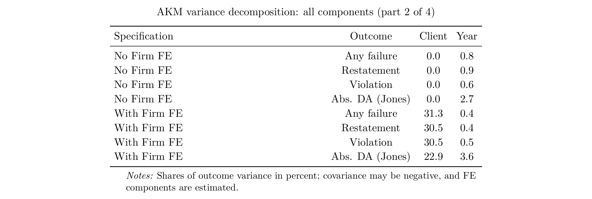
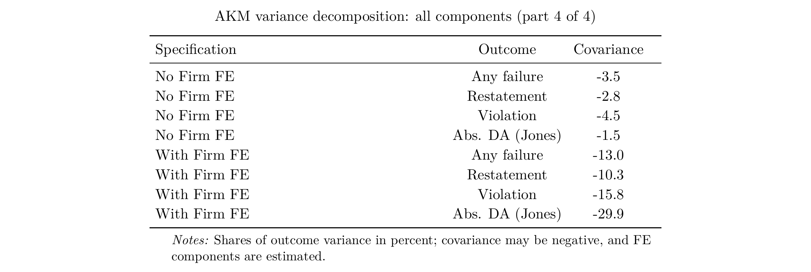
识别网络的连通性与个人排名的稳定性是两个不同问题。下一表将原始网络和经姓名核验网络中相同的汇总量只列一次；原始边、桥接者和自由度明细保留在诊断输出目录。
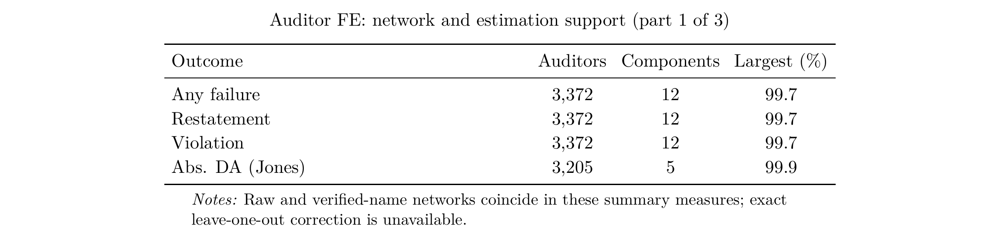
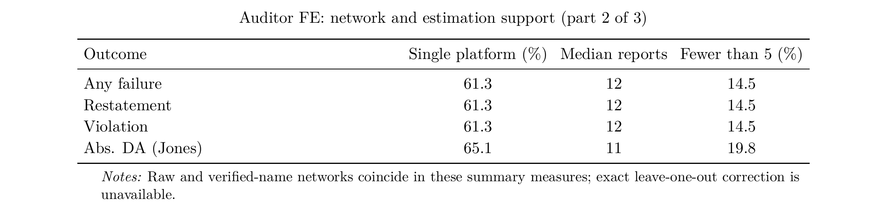
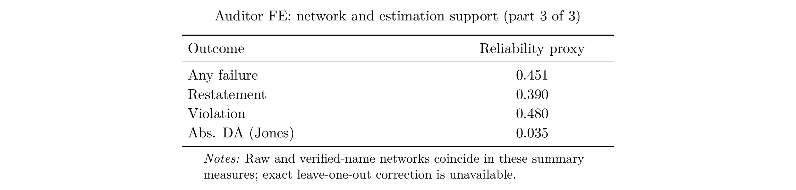
综合失败网络有 3,372 名审计师、12 个连通分量，最大分量容纳 99.7% 的审计师；但 61.3% 仅在一个审计平台出现，14.5% 的审计师少于五份报告。精确 leave-one-out 方差修正未生成。因此“网络基本连通”只能支持大部分 FE 处在同一可比较网络中，不能自动证明个人排名可靠。
7.2 跨样本可靠性、质量组和可观察背景
对同一审计师在两部分样本分别估计 \(\widehat\alpha_a^{(0)}\) 与 \(\widehat\alpha_a^{(1)}\)，比较相关性、尾部分组保留率，并检验前一部分 FE 对后一部分结果的样本外增量 \(R^2\)。这些是测量可靠性诊断，不是新的处理效应回归。
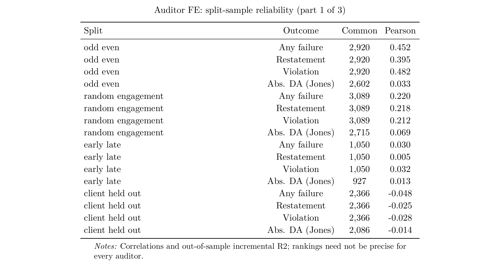
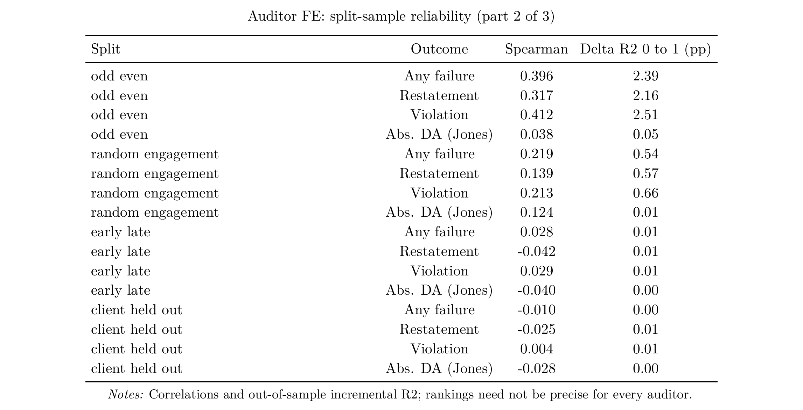
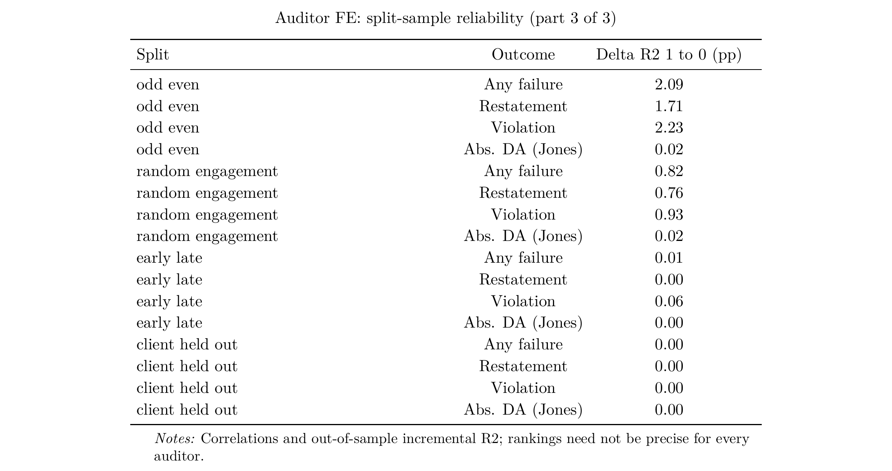
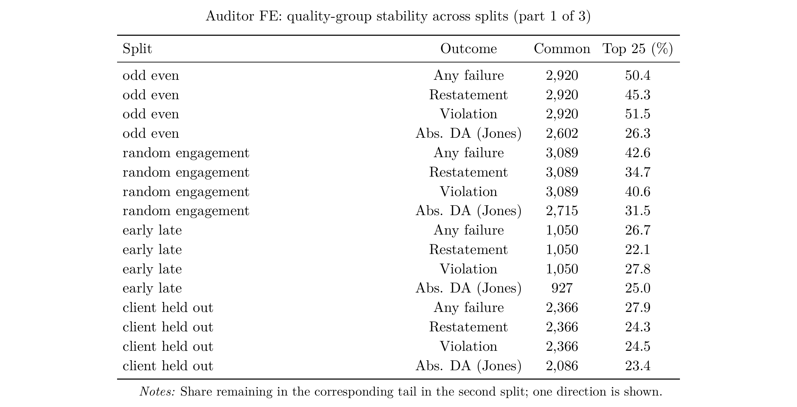
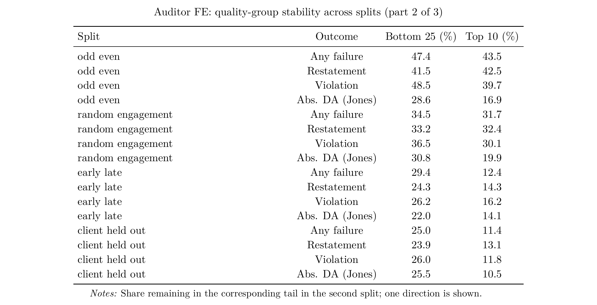
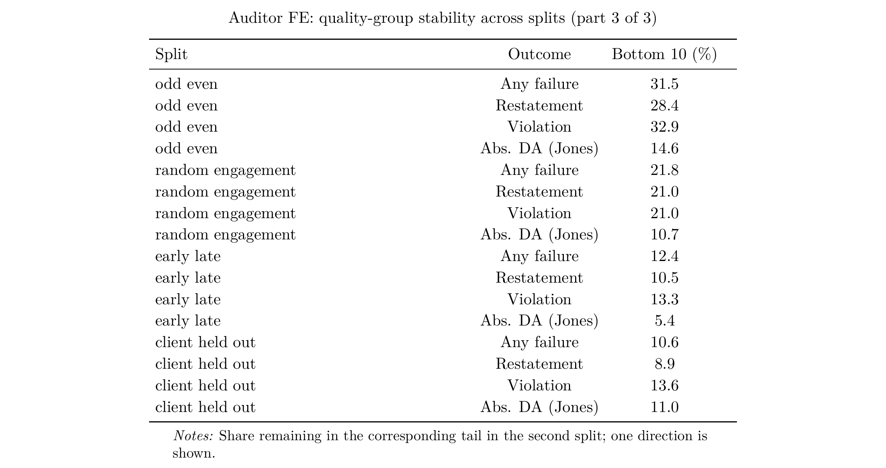
综合失败 FE 在奇偶年份拆分中的 Pearson 相关系数为 0.452，随机客户项目拆分中降至 0.220，早晚时期拆分仅 0.030，留出客户拆分则为 −0.048；异常应计 FE 在奇偶拆分中也只有 0.033。奇偶拆分可能共享同一客户和相近时间环境，不能替代跨期或新客户预测验证。尾部保留率随拆分方式变化，故用单次全样本 FE 把个人机械分成“好／坏”有明显测量风险。
将含客户 FE 的审计师固定效应投影到可观察人力资本时，估计的是审计师层面的描述性式子
\[\widehat\alpha_a=\theta_0+\theta_1\mathrm{Big4Bg}_a+\theta_2\mathrm{School985/211}_a+\theta_3\mathrm{MasterPlus}_a+\theta_4\mathrm{BachelorPlus}_a+u_a.\]
加权列按审计师的观察次数加权，另列不加权 OLS；被解释变量是估计出来的 FE，本身含有测量误差。四个特征只解释失败 FE 等权方差的 0.159%、加权方差的 0.259%。加权回归中硕士及以上对失败 FE 的系数为 0.0111（标准误 0.0044），四大背景为 0.0034（0.0047）；不能由个别显著系数推断人力资本对审计质量的稳定净效应。
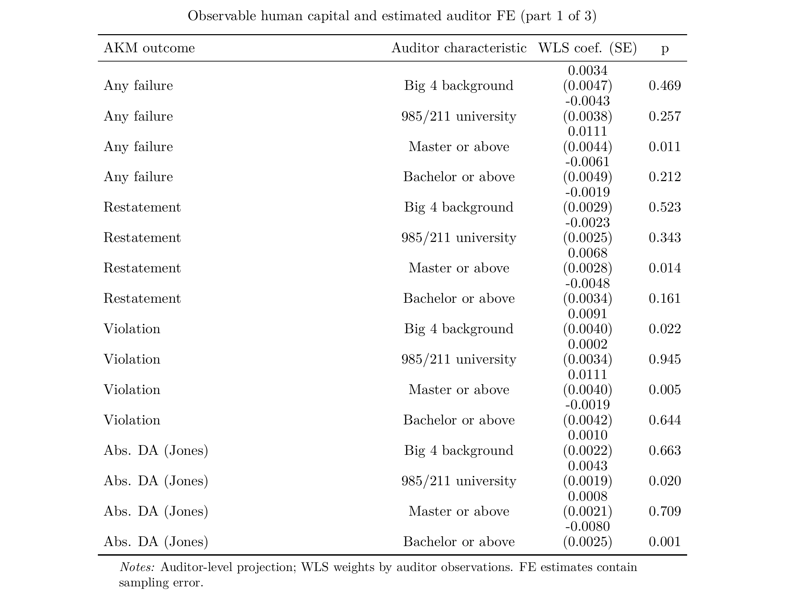
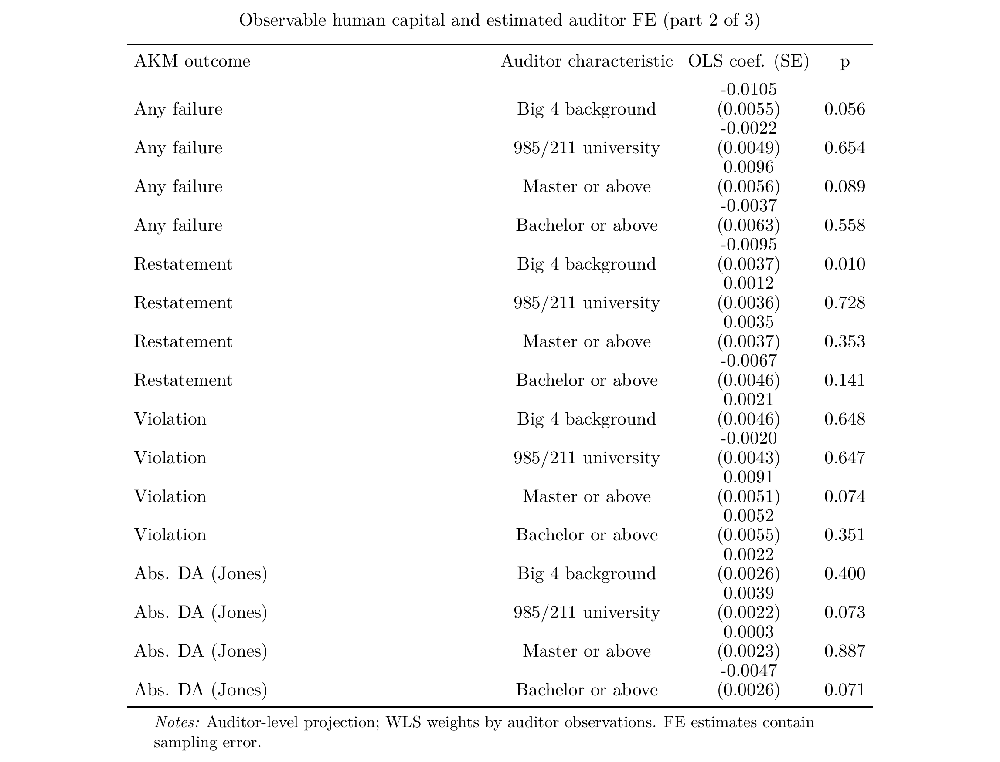
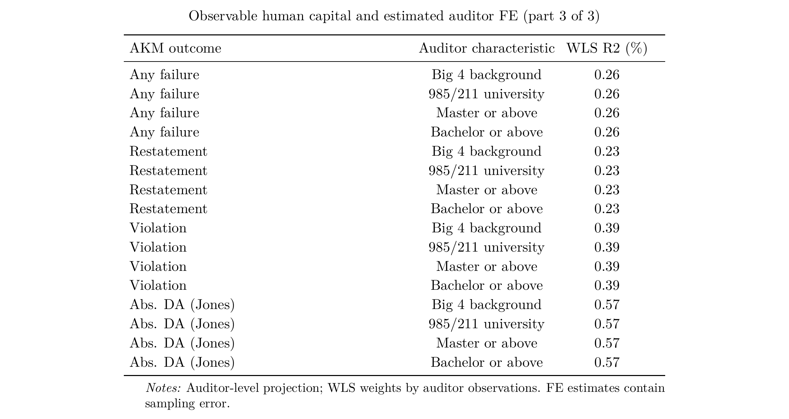
质量组画像和事务所梯队流动仅是分布描述；不再次把它们当成回归结果。失败 FE 的两端四分位审计师平均有 6.17 个客户，中间 50% 有 8.69 个客户，说明极端排名组的观察支持反而较少。完整分组、极端组与中间组的差异及九种梯队流向可从以下表和原始分组差异文件复核。
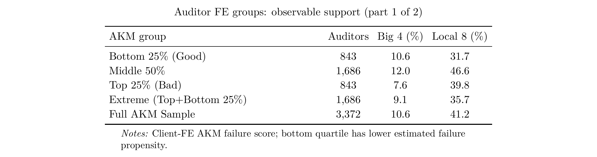
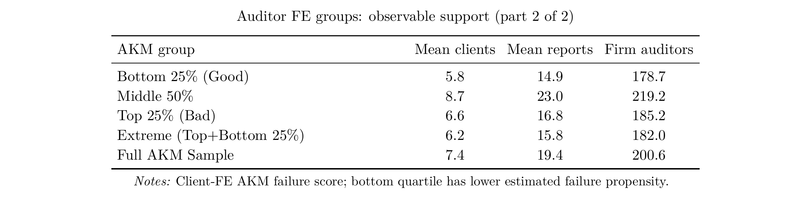
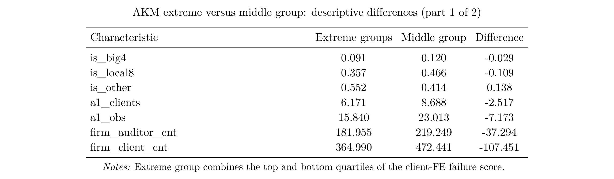
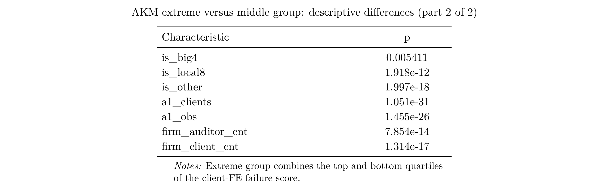
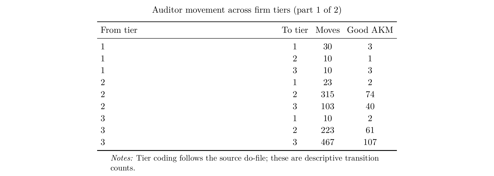
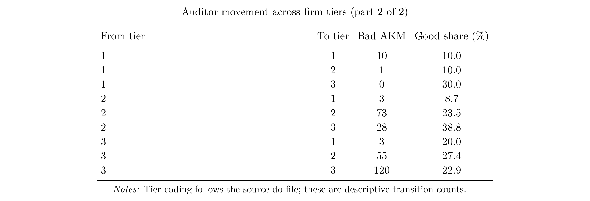
7.3 稀有失败、个人排名与平均服务效应
审计师可能存在真实能力差异，但严重失败很少被观察到。有限职业记录中的“零失败”，不足以区分高质量、低风险客户和暂时没有发生失败。少量失败一旦出现，又可能大幅改变个人 AKM 排名，因此排名难以在不同客户和时期之间稳定迁移。
现有 Python 检查支持这种信息稀疏的解释：在获得分数的当期 A1 观测中，约 74.8% 对应的训练历史没有观察到综合失败，训练报告数的中位数只有 12 份。 这是按获得分数的观测计数，并非独立审计师人数比例。不过，“少数事件具体驱动了多少排名变化”，还需要事件影响度检查才能确证。
这对后续研究有三个含义：
- 保留有实质经济含义的 audit outcome。 如果重述、违规最贴近研究问题，而其他 Y 更不稳定，就不应为了可预测或显著而换掉它们。
- 降低对个人 AKM 排名的要求。 它可以用于描述和测量诊断；现阶段不宜让“高分就是好审计师”承担整个因果识别。稀有性不自动使线性回归系数有偏，但会削弱个人效应的精度和排序可靠性。
- 把“个人排名难以估准”与“平均服务效应能否识别”分开。 后者并不要求把每个审计师排准。如果存在可信的分配变化，仍可以估计某类服务提供者的平均影响，只是不能将不可靠的 AKM 分数当成已经测准的质量处理。
待解决问题与补充材料
仍需核验。 每个估计样本的起止年份、连通分量与 FE 归一化；控制变量上游时点；分数是否使用未来信息；事件影响度检查尚未证明少数失败具体驱动多少排名变化。
数据、程序与输出记录
估计程序（存档）。 45_pairwise_akm_report_year_sensitivity.do · 30_auditor_akm_fe.do · 30_auditor_akm_reliability_tests.do